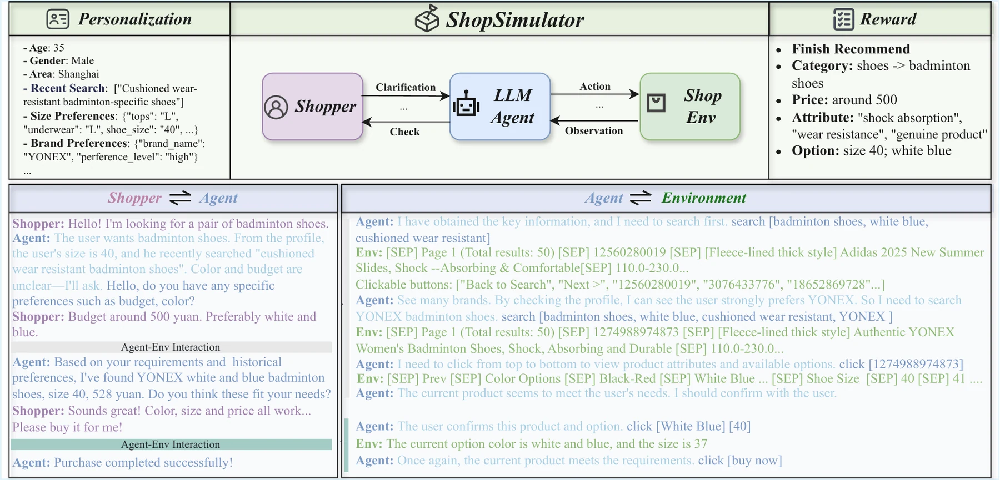
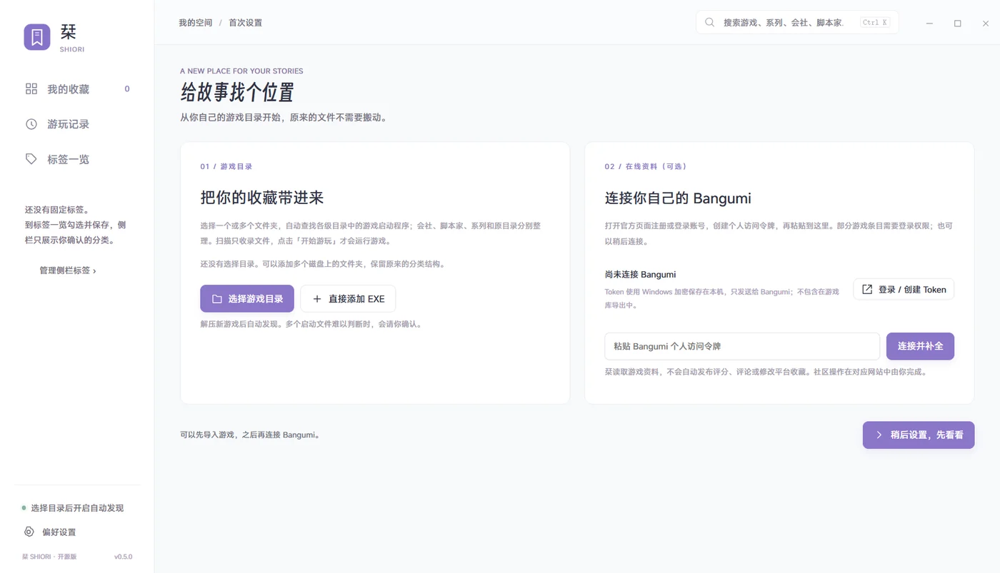
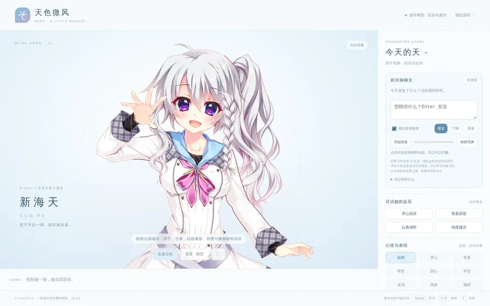

AGENT RUNTIME
Kirakira Agent
A local-first personal assistant that chats, reaches out on its own, and keeps working in the background across Web, Telegram, and QQ, with long-term memory built from past conversations.
Projects / things I build
Things I build: agent systems and training pipelines for work and research, plus personal projects around games and characters.
A local-first personal assistant that chats, reaches out on its own, and keeps working in the background across Web, Telegram, and QQ, with long-term memory built from past conversations.

Teaches Qwen3.5-4B to shop for a simulated customer — ask what they need, search, compare, and buy — with agentic SFT and then online GRPO. Strict success on 1,459 held-out tasks rises from 13.16% to 64.63%.
Environment figure from ShopSimulator (Alibaba), the simulator this project trains in.


An open-source framework where agents improve themselves round by round: the model stays fixed while prompts, Skills, and tools evolve. I contribute fixes to its RSI algorithm toolkits.
An open community co-building benchmarks, evaluations, and algorithms for recursive self-improvement.